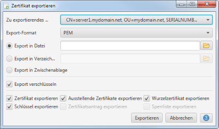

Zertifikat exportieren
Mittels diesen Dialogs kann das ausgewählte Zertifikat exportiert werden. Dabei könnnen das Export-Format,
das Export-Ziel sowie die zu exportierenden Zertifikat-Elemente ausgewät werden.

Zertifikate können wahlweise im PEM- oder PKCS#12-Format exportiert werden. Abhängig vom ausgewählten
Format stehen unterschiedliche Export-Ziele zur Verfügung.
- Datei
Alle Daten werden in eine einzelne Datei geschrieben.
- Verzeichnis
Die ausgewählten Zertifikat-Elemente werden als einzelne Dateien in das ausgewählte Ziel-Verzeichnis geschrieben.
Die einzelnen Dateiname werden dabei vom Zertifikat-Alias abgleitet.
- Zwischenablage
Die ausgewählten Zertifikat-Elemente werden als Text in die Zwischenablage kopiert.
Der Export wird standardmäßig verschlüsselt. Wenn diese Option ausgewählt ist, wird bei der
Export-Durchführung ein Neues Passwort zur Export-Verschlüsselung
abgefragt.
Die &uumL;brigen Optionen legen fest, welche Zertifikat-Elemente zu exportieren sind.
- Zertifikat exportieren
Das Zertifikat selbst mit exportieren.
- Ausstellende Zertifikate exportieren
Alle ausstellenden Zertifikate mit exportieren.
- Wurzelzertifikat exportieren
Das ausstellende Wurzelzertifikat mit exportieren.
- Schlüssel exportieren
Den Schlüssel mit exportieren. Wenn diese Option ausgewählt ist, wird bei der Export-Durchführung
das Passwort für den Zugriff auf den Schlüssel abgefragt.
- Zertifikatantrag exportieren
Den Zertfikatantrag (CSR) mit exportieren.
- Sperrliste exportieren
Die Zertifikatsperrliste (CRL) mit exportieren.
Optionen die für das ausgewählte Zertifikat nicht verfügbar sind, werden ausgegraut.